OFFICE PROJECT
For the office we used a basic design, there is just the essential furniture for working without distraction. The furnishings were taken from stores as IKEA, LEROY MERLIN, BTICINO.
Here there are the drawings of the room.
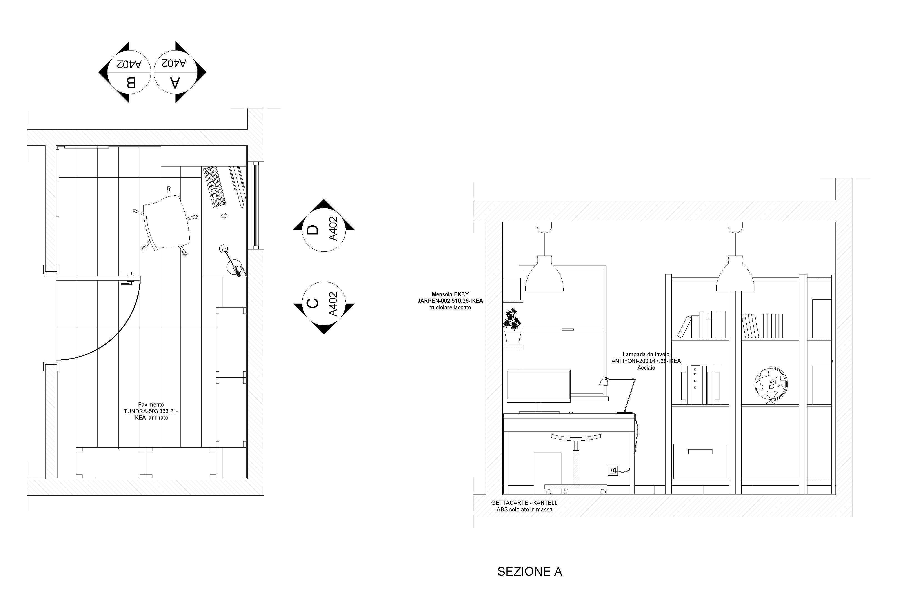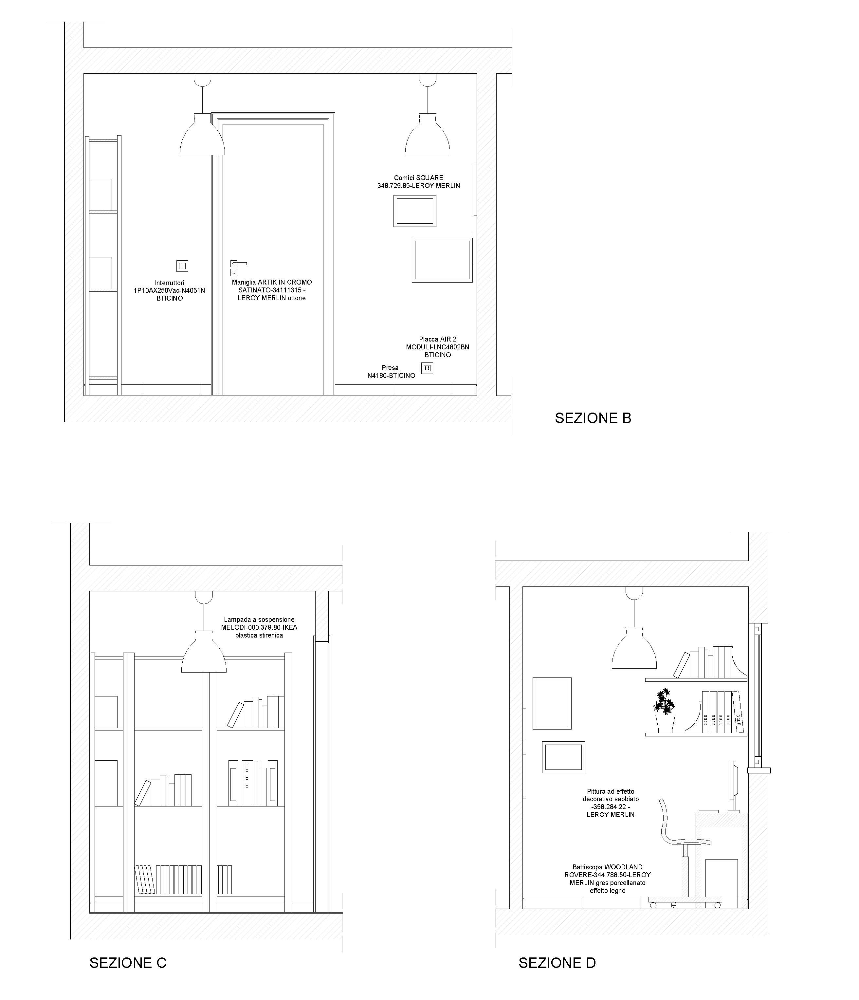
The principal complement of furniture are:
Desk BESTA BURS
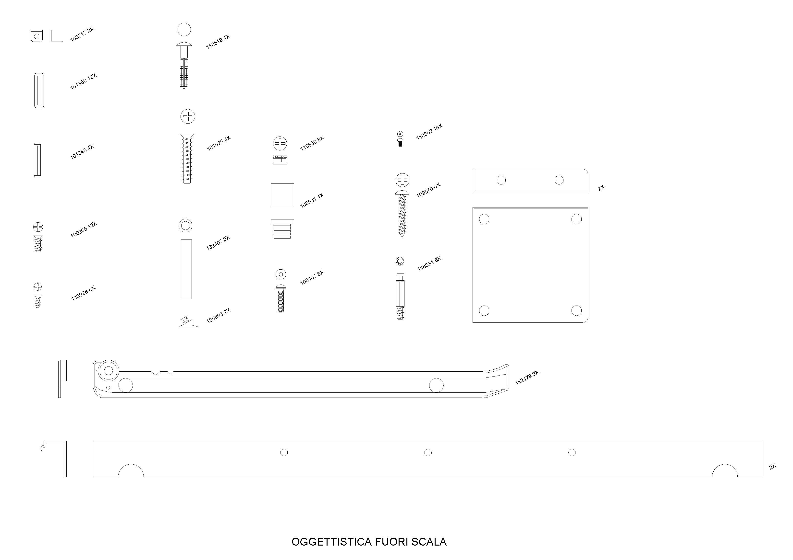 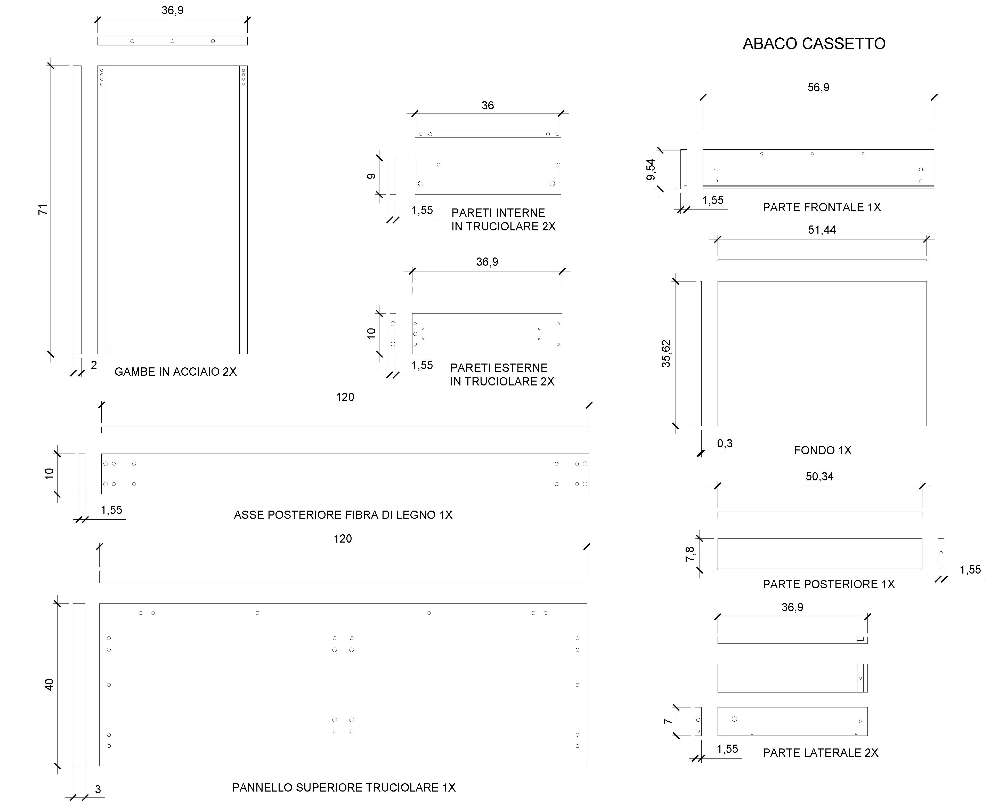
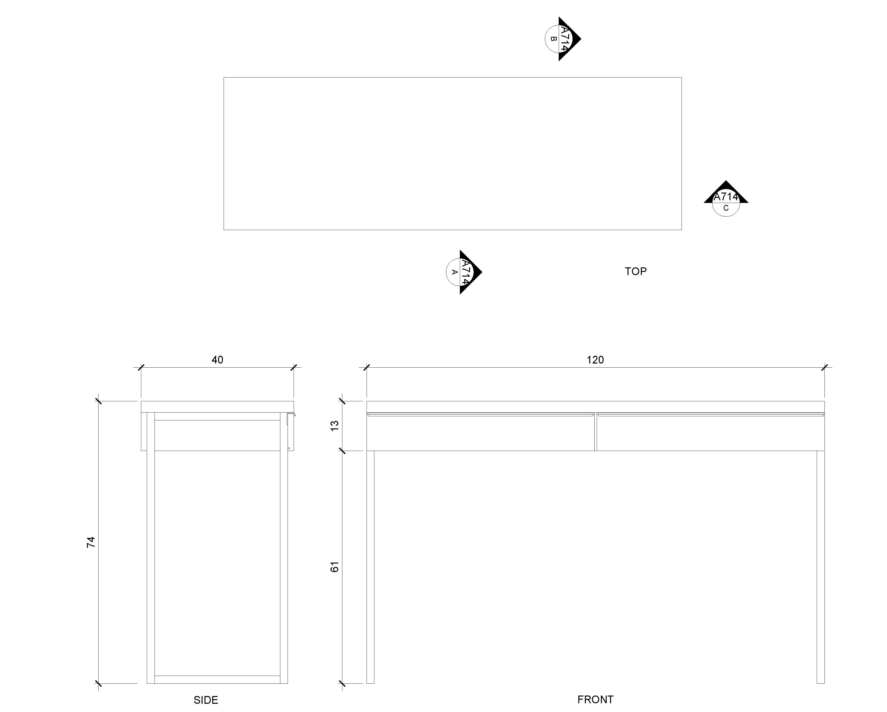 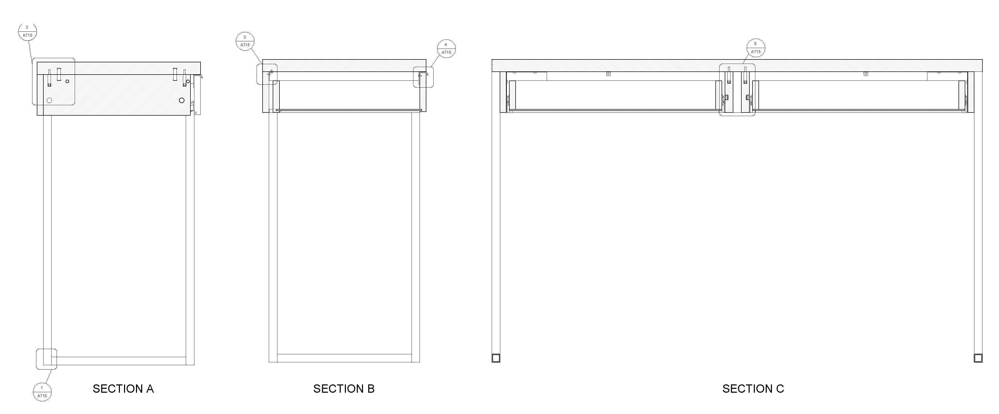
Shelf ALBERT
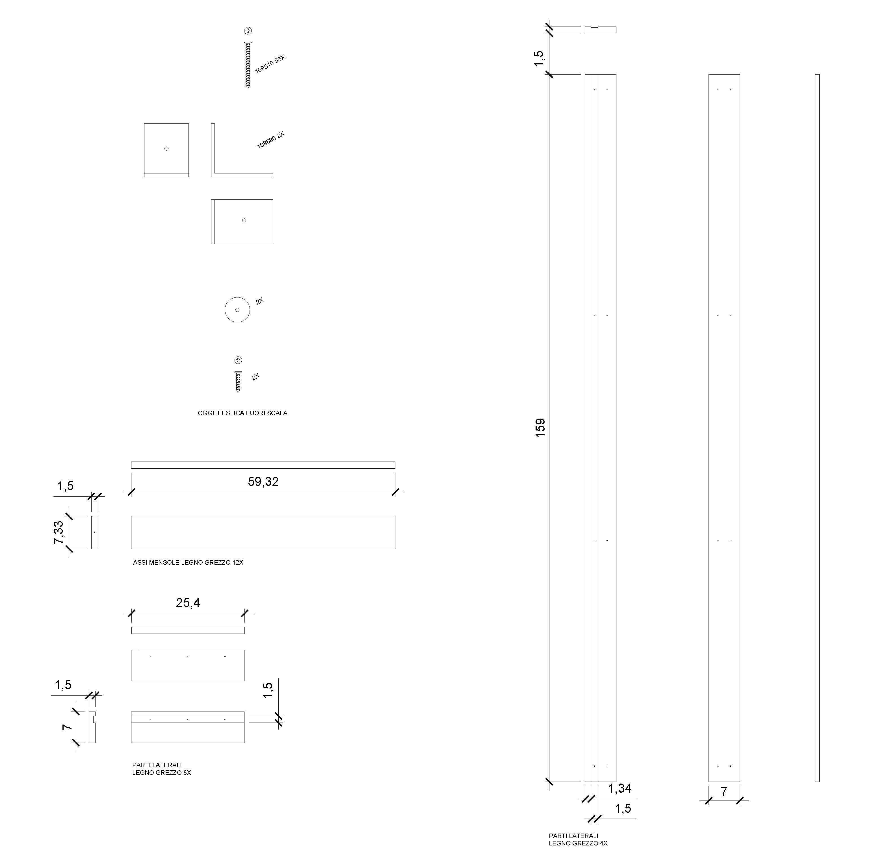 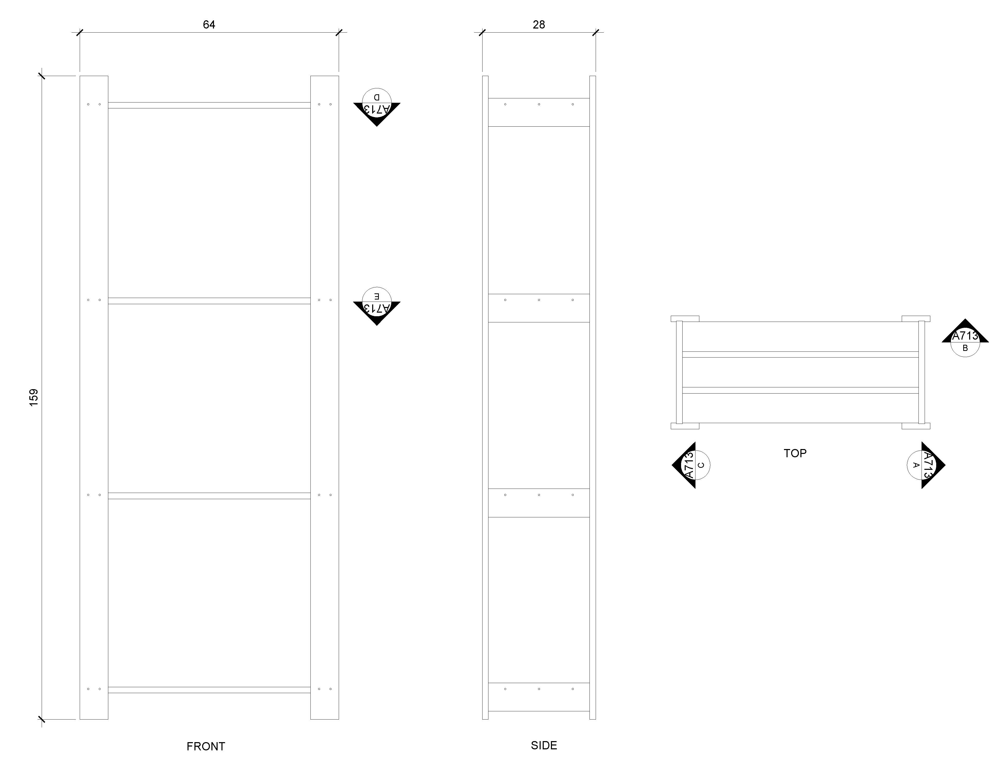
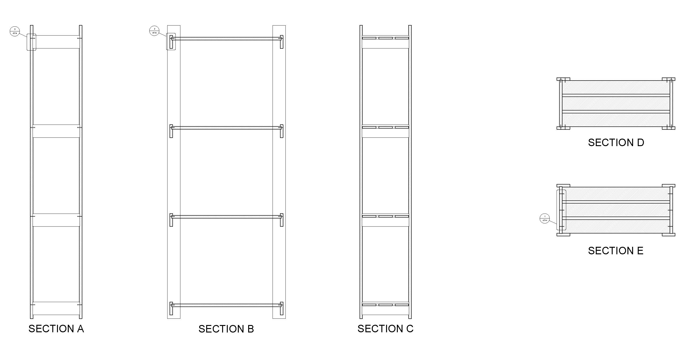 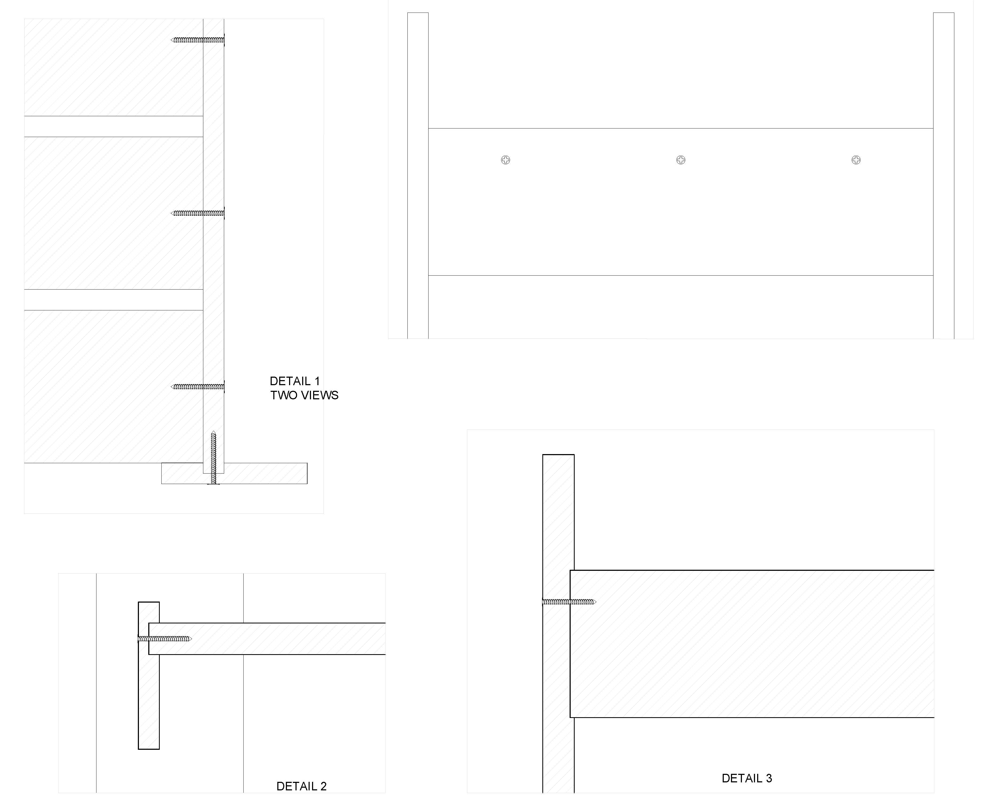
Chair SNILLE
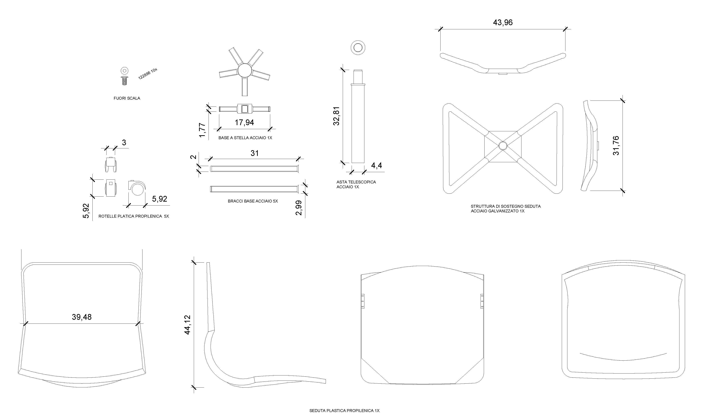  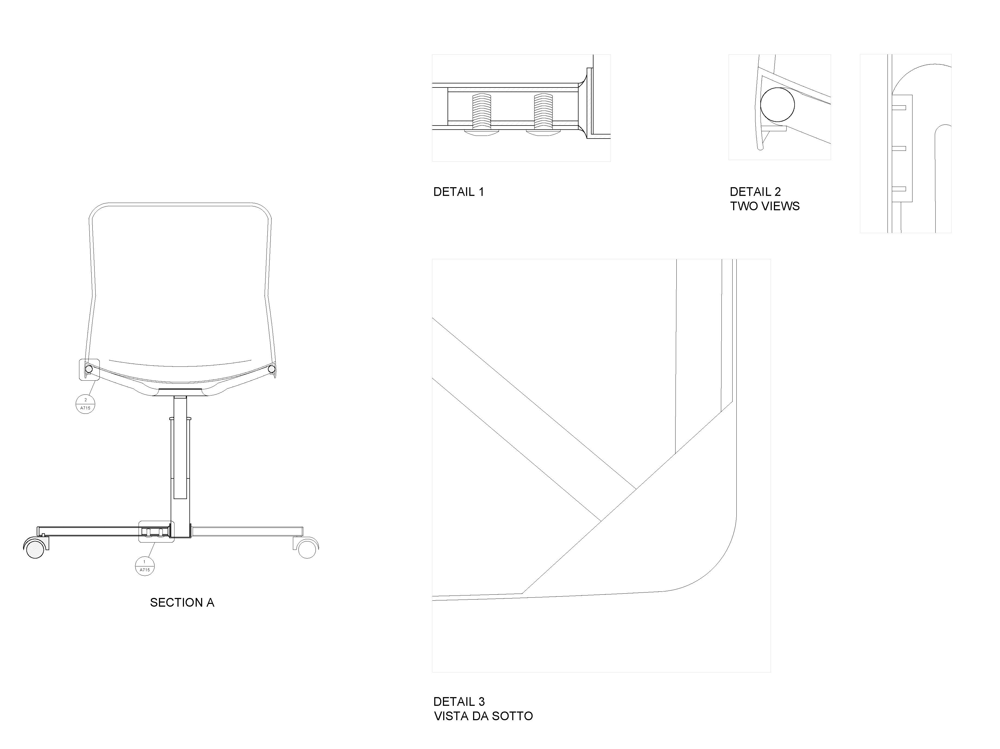
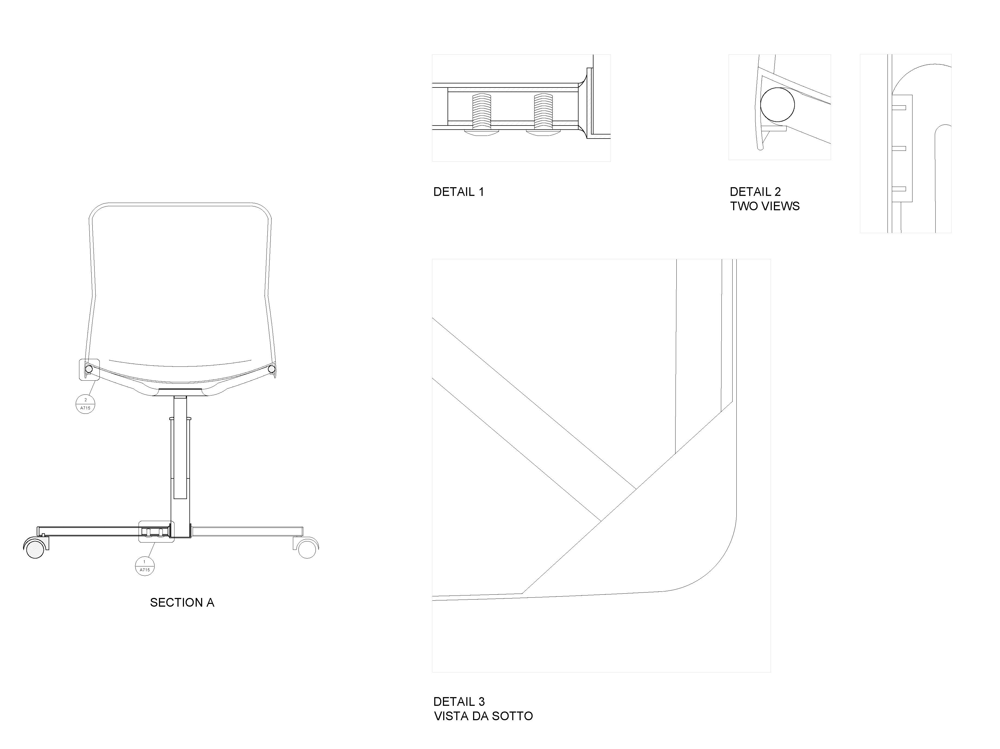
The others products we use:
Floor:
TUNDRA-503.363.21-IKEA laminato
Walls:
Pittura ad effetto decorativo sabbiato-358.284.22-LEROY MERLIN
Skirting:
WOODLAND ROVERE-344.788.50-LEROY MERLIN gres porcellanato effetto legno
Table lamp:
ANTIFONI-203.047.36-IKEA Acciaio
Suspended lamp:
MELODI-000.379.80-IKEA plastica stireria
Rubbish:
KARTELL ABS colorato in massa
Handle:
ARTIK IN CROMO SATINATO-34111315-LEROY MERLIN ottone
Shelf:
EKBY JARPEN-002.510.36-IKEA truciolare laccato